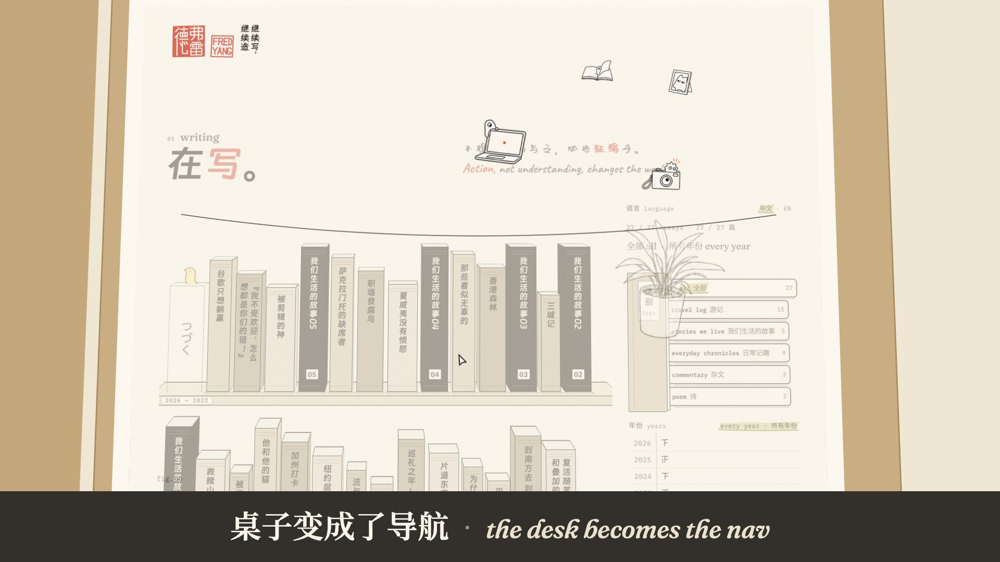
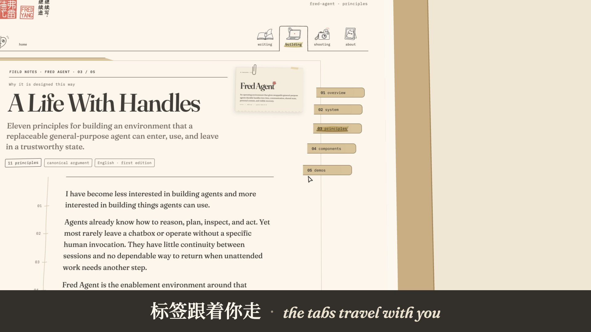
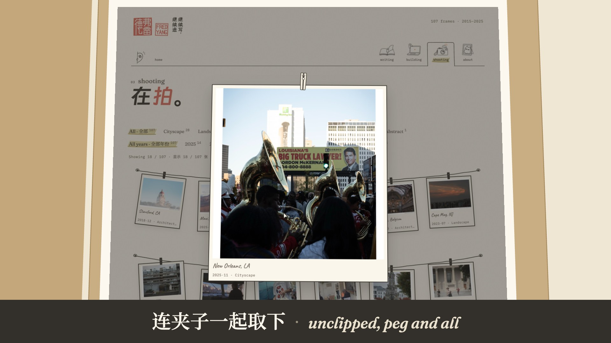
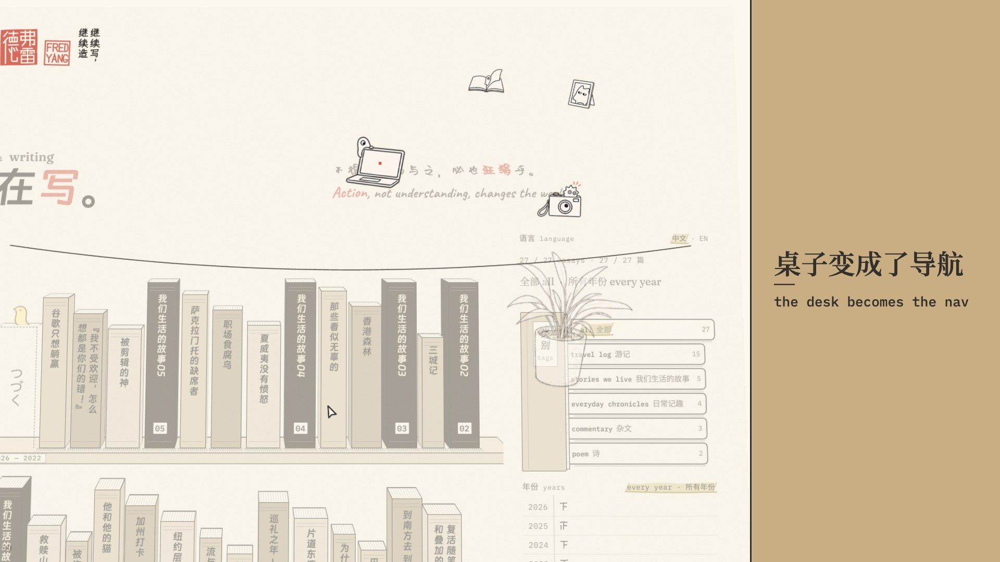
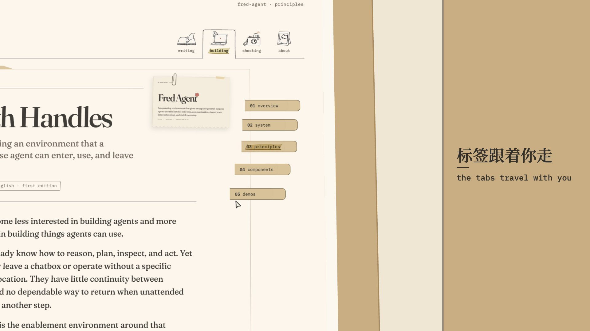
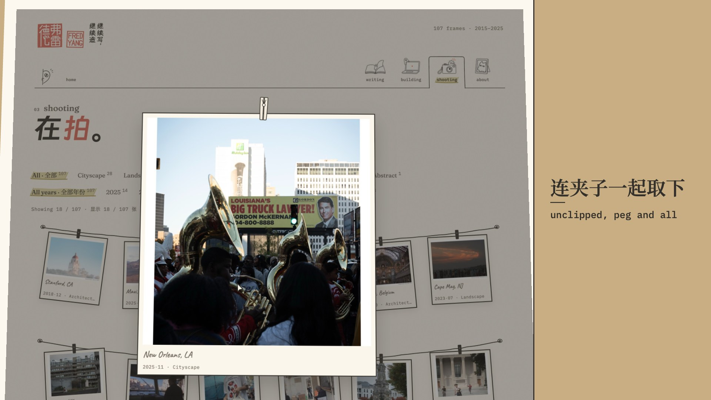
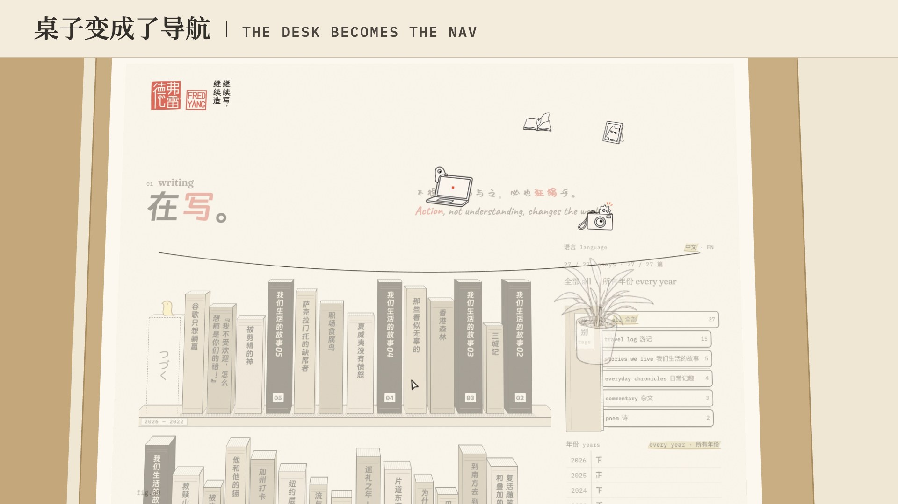
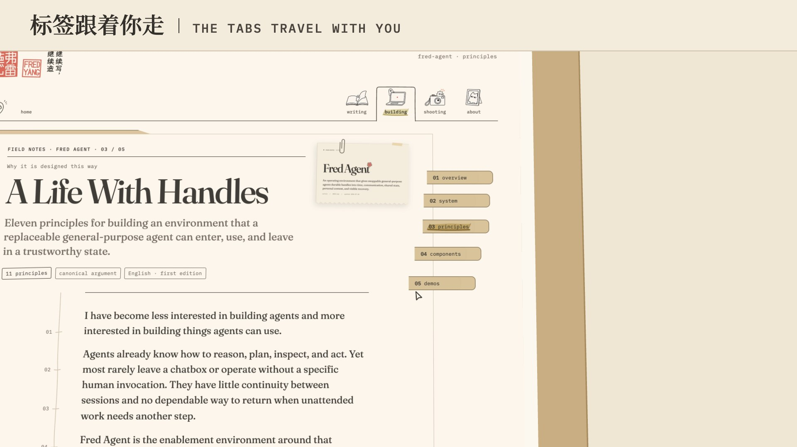
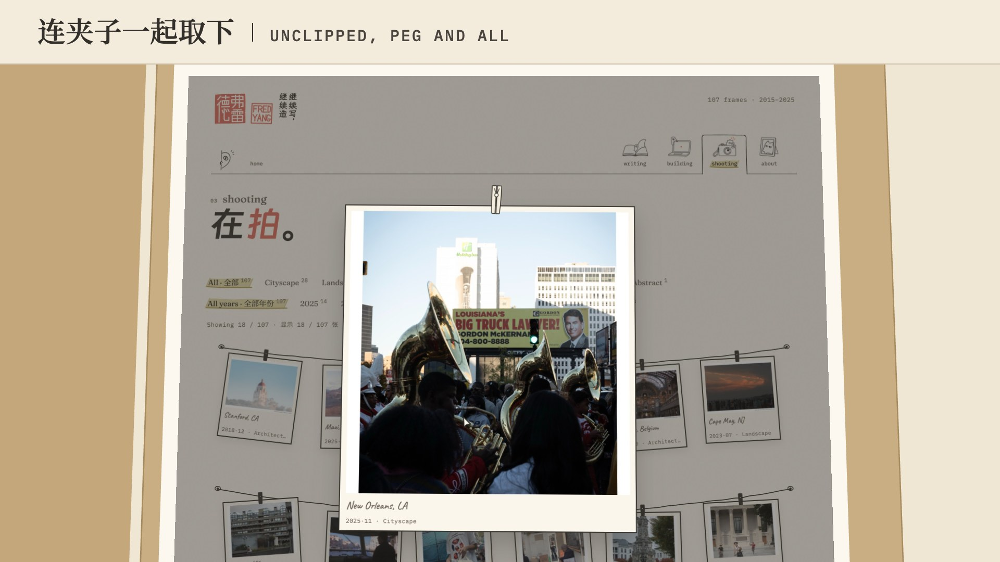

Three caption treatments, on the same three frames
v1.3's notes were written by the pen on slips over the page, so they read as the site's, covered part of what they pointed at, and left too soon. All three treatments here take the words off the page. The frame keeps a strip for the film's own voice, the picture (desk, dossier, take) gets the rest, and a caption can't overlap the action. None of them uses the pen, a slip or coral. One bilingual caption shows at a time. Each is fully in before its motion starts, stays until after it ends, and is fully visible for at least 2.5 s. The frames are real frames of v1.4: the desk flight and #35's tabs, both mid-ramp at ⅓ speed, and the print mid-flight with its peg. The film is rendered with the first treatment. To switch, set TREATMENT in caption.js (or add ?cap=column / ?cap=slate to the render's page) and re-render.
1 · The ink band recommended, and what v1.4 is rendered with
An ink strip, 136 px, under the picture. The words are reversed out of it on one centred line: the Chinese in Noto Serif SC at 60 px in paper, a dot, then the English in Fraunces italic at 50 px in a warm light paper tone. Why it's first: the gateway pages are light-only, so ink ground with reversed type is the one register the site never uses, and a caption set in it can't pass for part of the site. It sits where a feed viewer looks for subtitles. At phone size its contrast (about 12:1) holds better than the other two. It is the paper world's own ink, not a new colour. It costs the least picture of the three: the picture keeps the full width and 87% of the height.



At 390 px wide, the width of a 16:9 video in a portrait feed. The Chinese is about 12 px here and the English about 10 px, both reversed out of ink.
2 · The kraft column
A kraft column, 480 px, right of the picture, behind an ink rule. The words are stacked and left-aligned like a catalogue label: the Chinese at 52 px, a short rule, then the English in IBM Plex Mono at 26 px, all in ink. It reads well and suits a caption that needs two lines. Against it: the picture loses a quarter of its width, so v1.4's framings would all need redrawing (the tabs frame already loses the chapter's title). The kraft is also the dossier's own colour, so at whole framings the column reads as part of the folder.



3 · The paper slate
A paper strip, 124 px, over the picture, with a hairline under it. The words sit on one left-aligned line: the Chinese at 54 px, an upright rule, then the English in IBM Plex Mono capitals at 30 px, all in ink. It is the quietest of the three. Against it: ink on paper at the top of the frame is exactly the site's own header register, so the one thing it must not do (pass for the site) is what it comes closest to. A feed also lays its own labels over the top of a video.


